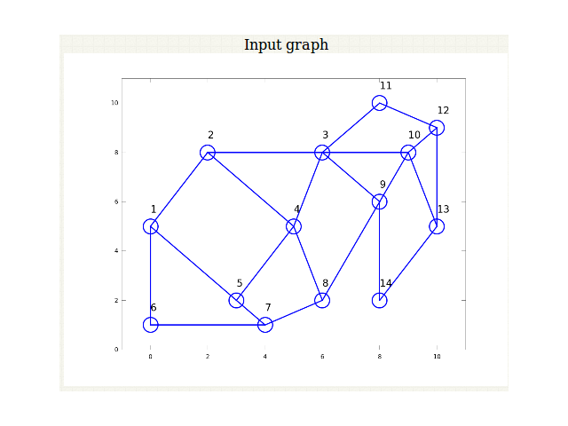

The objective of this experiment is to demonstrate the use of Hopfield models for solving optimization problems. The main issue in solving optimization problems using neural networks is mapping of the problem to a neural network architecture. This experiment demonstrates how an optimization problem such as the graph bipartition problem, can be mapped on to an Hopfield model (feedback neural network).

Graph bipartition problem
The problem illustrated here is the graph bipartition problem, using Hopfield model to solve it. The problem is to partition a given graph of \(N\) nodes equally, as shown in the following figure, such that the connectivity (measured in the terms of the number of links) between the two partitioned graphs is minimum.
 |
The problem can be mapped onto a Hopfield network, in which each bipolar unit corresponds to a node in the graph, with the state \(s_i = +1\) representing the node in one half and state \(s_i = -1\) representing the nodes in the other half. Let state \(c_{ij} = 1\) if the nodes i and j are connected and \(c_{ij} = 0\) if the nodes are not connected. Thus the cost term \(c_{ij}s_i s_j\) contributes to a non-zero value only if the nodes are connected. We have \(c_{ij}s_i s_j = +1\) if the nodes are in the same partition, and \(c_{ij}s_i s_j = -1\) if they are in different partitions. For equal division of the nodes \(\sum\limits_{j} s_i=0\). Therefore the cost term with equality constraint is given by
-
\( E = -\frac{1}{2}\)\(\sum\limits_{i,j}c_{ij}s_i s_j + \frac{\alpha}{2} [\sum\limits_{i}s_i]^2 \qquad(1)\)
where the positive constant \(\alpha\) is used to indicate the relative strengths of the two terms in the energy function. Due to conflicting requirements of the two terms, there will be several minima in the energy function. The cost functions E can be written in the Hopfield energy form as
-
\( E = -\frac{1}{2}\)\( \sum\limits_{ij}w_{ij}s_i s_j + \frac{N\alpha}{2} \qquad(2)\)
where \(w_{ij} = c_{ij}- \alpha\). The term \(N\alpha/2\) is to take care of the term corresponding to \(i=j\), since \(w_{ii} = 0\) for a Hopfield Model.

The Hopfield model for the solution of graph bipartition problem is discussed here. While performing this experiment it is necessary to understand the issues associated with annealing of Hopfield model.
 |
Figure 1 illustrates a graph with 4 nodes before the process of annealing. Figure 2 shows the input graph and the bipartitioned graph.
 |
We see that even if there exists a solution through annealing, it need not lead to the optimum solution of the bipartition. The graph still is not divided in parts containing equal number of nodes as illustrated in Figure 2.
|  |
Figuew 3 illustrates a graph with 14 nodes before the process of annealing. Figure 4 shows the input graph and the bipartitioned graph.
 |
We see that in the case of more number of nodes, annealing leads to the optimum solution of the bipartition. The graph still is now divided in parts containing equal number of nodes as illustrated in Fig. 4.

For the graph bipartition problem
First select a graph type, how many nodes it has to contain.
Select the number of nodes and number of edges, and then mention nodes sharing the edges
Give the value of \(\alpha\) and \(\delta T\) (decrement in temperature) to be used. \(\delta T\) is the temprature gradient controlling annealing process helping the network to settle down (Refer to Artificial Neural Networks virtual lab, Experiment 6).
Press 'Init' to generate the required graph. Observe the graph generated.
Click on 'Anneal' to the initiated Hopfield and then observe the output.

Observe the connected graph has been partitioned into required spaces with the minimum number of connections in between.
Observe the effect of changing the parameters \(\alpha\) and \(\delta T\) for the annealing schedule.
Vary the number of nodes and edges and observe if there exists any relation between \(\delta T\) and number of nodes/edges.
Explain the formulation of the graph bipartition problem as an optimization problem.
Study the performance of the graph bipartition problem for the example shown in the following figure for \(\delta T\) values between 0.1 and 0.5 .

B. Yegnanarayana, Artificial Neural Networks, New Delhi, India : Prentice-Hall of India, p. 296, 1999.
C. Peterson and B. Soderberg, "A new method of mapping optimization problems onto neural networks", Int. J. Neural Systems, vol. 1, pp. 3-22, April 1989.